Statusreport
Die aufgezeichneten Daten können in einem Statusreport zusammengefasst werden.
Dieser Bericht kann direkt mit dem lokalen Browser geöffnet oder zeitgesteuert als eMail versendet werden.
Beispiel: Statusreport
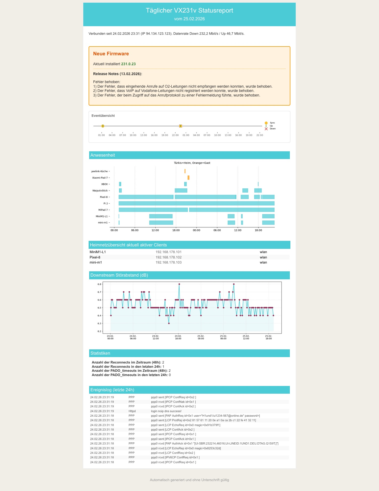
Header
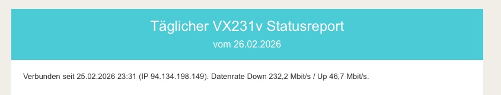
Der Header zeigt * Datum der Generierung * Datum und Uhrzeit seit der letzten Routereinwahl * die aktuelle IP-Adresse des Routers * die aktuelle Download- und Upload-Geschwindigkeit
Firmware
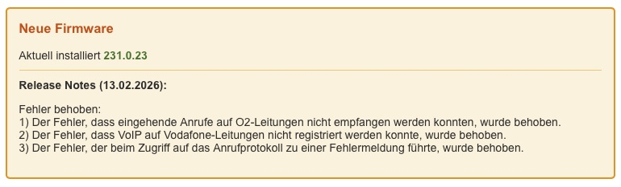
Falls eine neue Firmware verfügbar ist, werden die dazugehörigen Releasenotes angezeigt. Die Releasenotes werden von der TP-Link Seite geladen und 1:1 ausgegeben.
Hinweis: TP-Link stellt diese Informationen nicht in strukturierter Form zur Verfügung, weshalb die Gestaltung sich von Note zu Note ändern kann.
OPTIONAL: AI Analyse der Routerdaten der letzten 24/48 Stunden
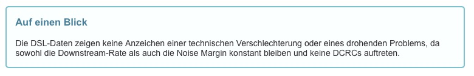
Wenn auf dem Mac der AI Shortcut installiert ist, werden die Routerdaten der letzten 24/48 Stunden analysiert und ein kurzer Bericht erstellt. Sollten die erfassten Routerdaten zu umfangreich für die Nutzung der kostenlosen Apple/GPT Schnittstelle sein, wird der Analyseprompt als Textdatei ai_prompt_debug.txt im Skriptordner abgelegt und der Bericht nicht erstellt. Man kann bei Bedarf diese Datei durch eine andere KI auswerten lassen.
Eventübersicht & Leitungsanalyse
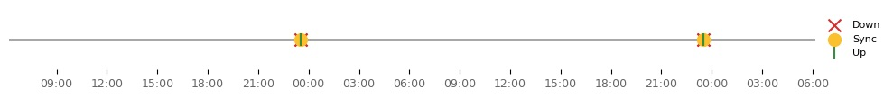
Die Eventübersicht zeigt Leitungstrennungen und Neuverbindungen der letzten 48 Stunden. Oberhalb der Disconnect-Symbole auf dem Zeitstrahl wird die genaue Dauer des Verbindungsverlusts in Sekunden angegeben.
Erweiterte Leitungsanalyse
Zusätzlich werden in einem eigenen Informationsblock unterhalb der optionalen AI Analyse auffällige Ereignisse gesondert ausgewiesen. Das Skript wertet dazu die abstrakten PPPoE-Trennungsereignisse aus dem Log (events) aus und korreliert diese mit den physikalischen Leitungsparametern aus der historischen dsl-Tabelle.
Das Flussdiagramm veranschaulicht diesen Analyseprozess:
flowchart TD
Start[Neues LCP/User request Event<br>Timestamp analysieren] --> TriggerCheck{Welcher<br>Auslöser?}
TriggerCheck -->|LCP down| ISP[Trennungsanforderung<br>PROVIDER]
TriggerCheck -->|User request| IsSched{Zeitplan?}
IsSched -->|Zur identischen Zeit<br>an >= 2 Tagen| Router[Geplanter Neustart<br>ROUTER]
IsSched -->|Einmaliges Event| Manual[Manuell / System<br>MANUAL]
ISP --> DSL_Get[Hole letzte DSL-Werte<br>vor dem Trennungs-Event]
Router --> DSL_Get
Manual --> DSL_Get
DSL_Get --> SNR_Check{SNR < 6.0 dB<br>vor Abbruch?}
SNR_Check -->|Ja| WarnSNR[Ausgabe: 'Signalstörung vor Abbruch']
SNR_Check -->|Nein| CRC_Check{Anstieg um > 1000<br>CRC Fehler?}
WarnSNR --> CRC_Check
CRC_Check -->|Ja| WarnCRC[Ausgabe: 'Massiver CRC-Fehler-Burst']
CRC_Check -->|Nein| Up_Wait[Warte auf PAP AuthAck<br>UP-Event]
WarnCRC --> Up_Wait
Up_Wait --> Rate_Check{Download Rate<br>nach Reconnect<br>> 10% geringer?}
Rate_Check -->|Ja| WarnRate[Ausgabe: Profil-Ruckfall<br>Mbit/s Differenz anzeigen]
Rate_Check -->|Nein| Final[Leitungsanalyse<br>Abschliessen]
WarnRate --> Final- SNR (Signalstörung): Sinkt der Downstream Noise Margin (SNR) aus der
dsl-Tabelle in der unmittelbaren Aufzeichnung vor dem Abbruch auf< 6.0 dB, deutet dies auf eine physikalische Störung hin. - CRC-Fehler-Burst: Steigen die Download CRC Fehler exponentiell an (> 1000 Fehler zusätzlich gegenüber der vorletzten Aufzeichnung), signalisiert die Leitungsanalyse ein massives Aufkommen korrupter Pakete (z. B. fehlende Schirmung, Wackelkontakt oder Störeinfluss von außen).
- Profil-Rückfall: Synchronisiert sich der Router im Nachgang mit wesentlich weniger Bandbreite (z. B. < 90 % der Ursprungs-Rate) neu, wird im Report der Bandbreitenverlust beziffert aufgezeigt.
Anwesenheit
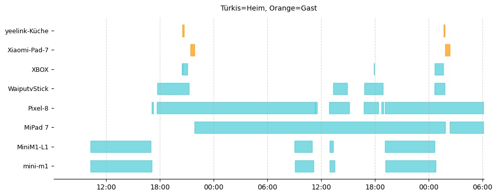
Die Anwesenheitsübersicht zeigt die LAN und WLANVerbindungen der Clients der letzten 48 Stunden. Durch unterschiedliche Farbgebung wird zwischen den verschiedenen Verbindungsarten unterschieden: * Türkis: Heimnetz-Verbindung * Orange: Gastnetz-Verbindung
Die Anwesenheit der Clients wird anhand der Routerlogdaten über die Zuteilung der IP durch den DHCP-Server ermittelt.
Clientnamen Wenn im Router unter "WLAN-Teilnehmer" oder "Kabelgebundene Teilnehmer" ein Clientname hinterlegt ist, wird dieser im Statusreport angezeigt. Der hinterlegte Name entspricht dem Namen, den der Client bei der Verbindung dem Router mitgeteilt hat. Hat man diesen in Webinterface überschrieben, wird der manuell überschriebene Name angezeigt.
Damit auch bei der schnellen Datenerfassung via Telnet/SNMP die Namen neuer Clients ermittelt werden können, prüft das Skript vor der Reporterstellung automatisch, ob noch unbekannte ("Unknown") Geräte in der Datenbank vorhanden sind. Ist dies der Fall, wird kurzzeitig auf das Web-Scraping-Interface zurückgegriffen, um die Namen auszulesen und in der Datenbank dauerhaft zu verknüpfen. Schlägt auch diese Zuordnung fehl, erhält der Client in der Grafik die Bezeichnung "unknown" gefolgt von seiner MAC-Adresse.
Heimnetzübersicht aktuell aktiver Clients
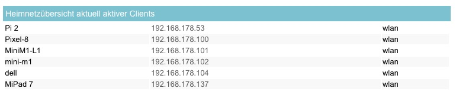
Zeigt die zum Zeitpunkt der Berichtserstellung im Heimnetz aktiven Clients an.
Downstream Störabstand (dB)
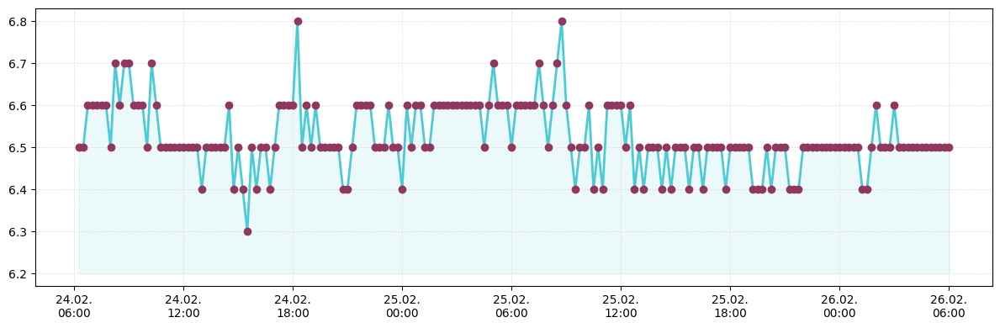
Zeigt einen über die config.ini konfigurierbaren DSL-Parameter, für den man sich besonders interessiert, an. Im Beispiel wird der Verlauf über die letzten 48 Stunden des "Störabstands im Downstream" angezeigt.
Statistiken
Anzahl der Reconnects im Zeitraum (48h): 2
Anzahl der Reconnects in den letzten 24h: 1
Anzahl der PADO_timeouts im Zeitraum (48h): 2
Anzahl der PADO_timeouts in den letzten 24h: 0
Beispiel für typische Debuginformationen bei Verbindungsproblemen.
Abschaltbar im [Statistics] Bereich der config.ini durch setzen der Werte auf False.
Ereignislog der letzten 24 Stunden
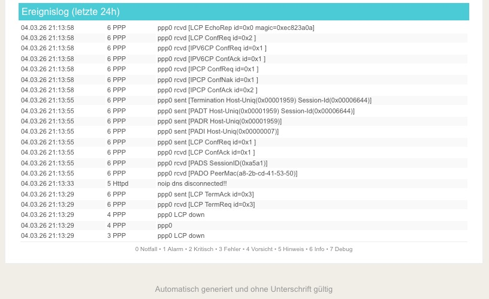
Je nach Konfiguration in der config.ini passt sich der Statusreport (Headline und Fußzeile) automatisch an, um maximale Übersichtlichkeit zu bieten.
Beispiel: Events bis Level 4 (Vorsicht)
Wird in der Konfiguration show_level = 4 gewählt, lautet die Überschrift entsprechend und in der Fußzeile werden auch nur die tatsächlich möglichen Loglevel 0 bis 4 als Legende eingeblendet:
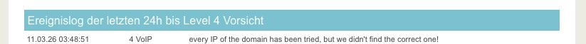
Anzeige der Loglevel im Footer
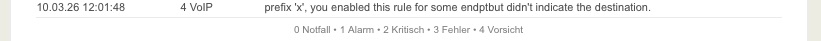
Beispiel: Events gefiltert (Level 9)
Wird hingegen der Filter-Level show_level = 9 genutzt, zeigt die Überschrift transparent an, welche Event-Typen ausgeschlossen wurden (z.B. DHCPD, Mesh, VoIP):
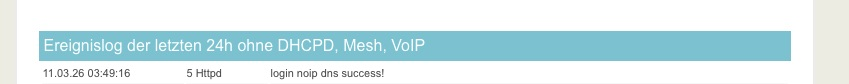
Konfiguration der Ereignisloganzeige
Was in dem Statusreport angezeigt wird, läßt sich über zwei Parameter steuern, den Loglevel und den Typ des Events.
Der Loglevel
Der Router unterteilt aufgetretene Events in Loglevel von "0 Notfall" bis "7 Debug". Über den Parameter "show_level" in der config.ini wird festgelegt, bis zu welchem Loglevel Events im Statusreport angezeigt werden.
Die vom Router verwendeten Loglevel lauten:
Ist in der config.ini "show_level = 4" gesetzt, werden alle Events bis einschließlich Level "4 Vorsicht" angezeigt, also 0 Notfall, 1 Alarm, 2 Kritisch, 3 Fehler, 4 Vorsicht.
Beispielausgabe für einen Event:
Wird "show_level = 7" in der config.ini gesetzt, werden alle Events der letzten 24 Stunden im Statusreport angezeigt, was sehr umfangreich werden kann.
Die Eventtypen
Jeder Event ist einem Eventtyp zugeordnet. Die vom Router verwendeten Eventtypen lauten: "DHCPD", "HTTPD", "MESH", "PPP", "VOIP".
Besonders die Events der Typen "DHCPD" und "MESH" treten sehr häufig auf, da sie durch das "ständige" An- und Abmelden der Clients entstehen, wie oben bereits bei "show_level = 7" geschrieben.
Um hier eine bessere Übersicht zu schaffen, wurden die bestehenden Eventlevel des Routers um einen weiteren virtuellen Level "9" ergänzt. Level "9" dient dazu, sich zwar alle Logeinträge anzeigen zu lassen, aber gleichzeitig bestimmte Eventtypen, die einen aktuell nicht interessieren, ausblenden zu lassen.
Zur Verwendung dieses Levels trägt man bei show_level = 9 und bei exclude_types die zu ignorierenden Eventtypen ein.
Die Eventtypen "DHCPD" und "MESH" sind in der Standardkonfiguration bereits eingetragen und werden somit bei gewähltem Level 9 nicht im Statusreport angezeigt.
Weitere oder andere Eventtypen können in der config.ini im Bereich [Events] unter "exclude_types" konfiguriert werden. Speziell "VOIP" könnte dort ergänzt werden, da dazu viele reine Info-Meldungen geschrieben werden.